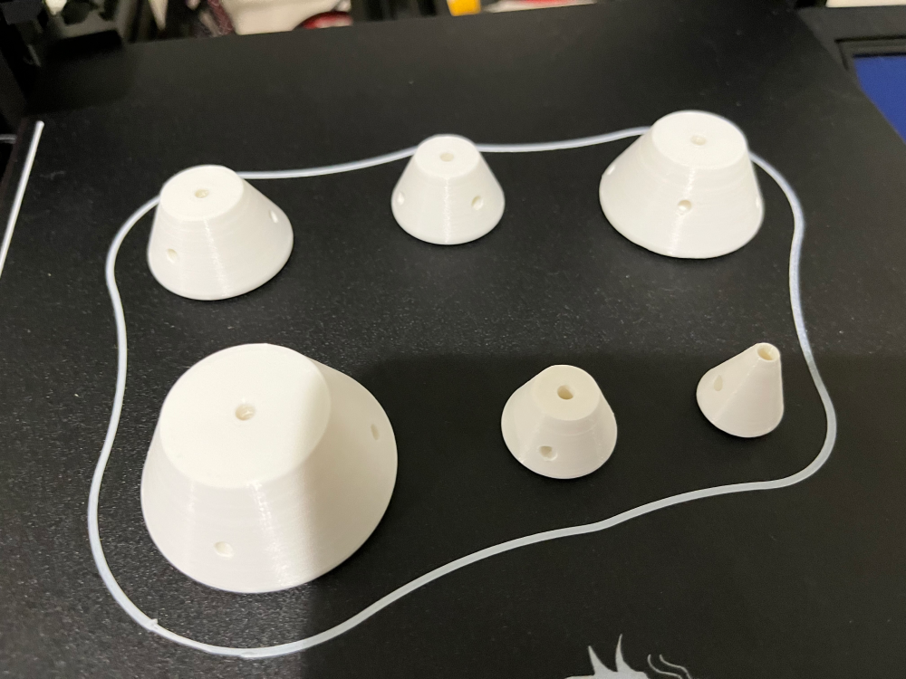
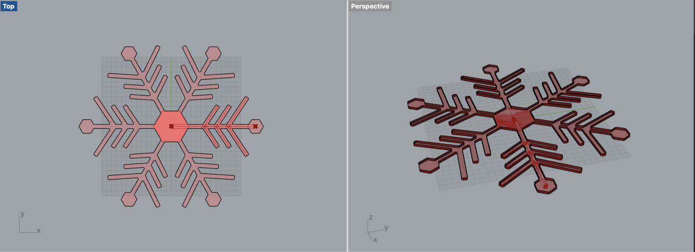
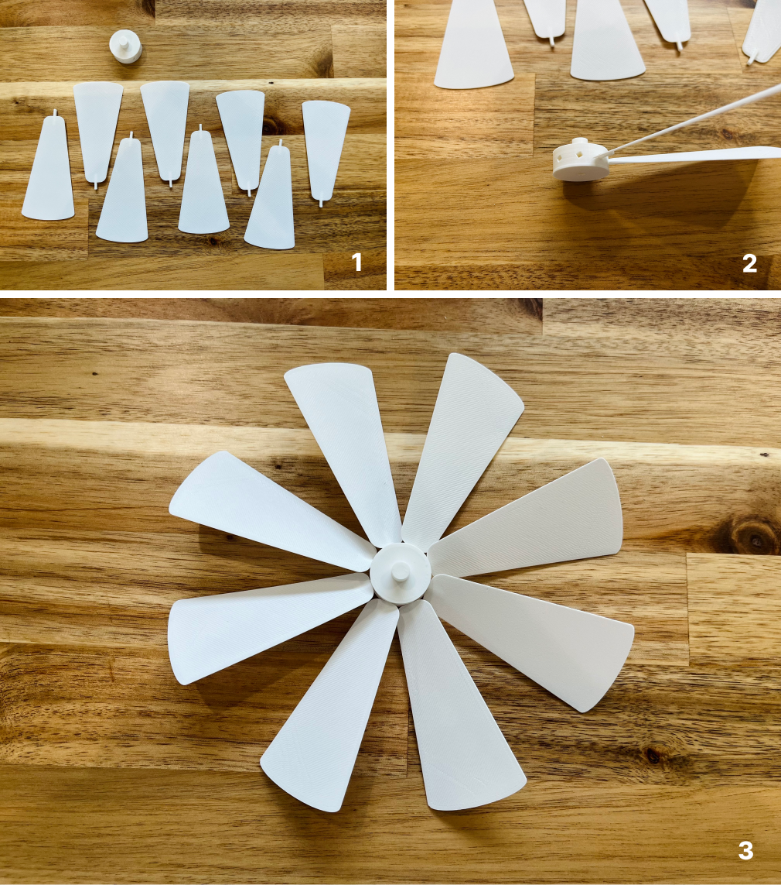

A8: Final Project!
Final look - Christmas pyramid spinner
Changes
I managed to keep most original design from the proposal, and updated the design of figurines
on the platform. I changed from family members to more festival ones, including gingerbread man, snowman, deer and a lovely
ginger house. I also removed the design of a box that can be opened and stored because its weight may cause the platform unbalanced.
I really struggle with the timeline for this project, as I had Covid and got severe symptoms
so I couldn’t effectively use my time. My original plan was to laser cut plywood for the large parts (base, platform, brace,
arches and brackets), but because of quarantine at home, I couldn’t go to Mill and had to change the process too. I ended up
with 3D printing all of them. I also pivoted away from mold casting candles because it may takes too much time while it was not
the core part of the design.
The methods I adopted in the updated process:
Rhino (3D modeling and mesh editing)
Grasshopper on parametric design
3D printing
Interference fits
Rhino (3D modeling and mesh editing)
Grasshopper on parametric design
3D printing
Interference fits
3D modeling in Rhino and printing
It took 4 days in total to create all the models, including:
Base
Platform
Brace
Fan blades x8
Hub
Pole bowl
Brackets x 2
Arches x 2
Christmas tree
Ornaments x 23
Figurines x 4
Base
Platform
Brace
Fan blades x8
Hub
Pole bowl
Brackets x 2
Arches x 2
Christmas tree
Ornaments x 23
Figurines x 4
Christmas tree and ornaments: I used Truncated Cone to create each level of the Christmas
tree and used ApplyEdgeSoftening to have rounded tree edges. The ornaments are installed on the tree using press fit,
and I found it’s an art to set the correct tolerance for a tight fit. After trial-and-error for more than 10 attempts,
I finally landed with a tolerance of 0.2mm. This exercise turned very helpful as I had a much better intuitive sense
after this for how to adjust the tolerance, and applied it in various press fits need for other parts.
Hub and fan blades: I made the hub with 8 square slots to install 8 fan blades. Each square
slot is tilted for 30 degrees and this nicely fixed the blade position I need.
Arches: to add dynamics to the design, the arch has snowflakes both as positive and negative
spaces on the surface. I used BooleanDifference and BooleanUnion to achieve this effect. It turned out the negative space
was very challenging for the printer to produce and I iterated the line thickness and shapes multiple times to avoid 3D
printed spaghetti. I have more details on this in the next section.
Platform and figurines: I selected multiple festival figurines from Thingverse, and added a
cylinder to each so that they can be installed on the platform using press fit.
Brackets: the arches are installed on the base with a couple of brackets underneath as the
fixture. The brackets are slotted into the end of arches.

Parametric design with Grasshopper

Snowflake is my main design on arches and I wanted different thickness and shapes of snowflakes.
To achieve this goal I used Grasshopper to create a parametric snowflake. By following a tutorial, I successfully used Division
to fully control the number of petals of a snowflake. The size, angle and distance within the snowflake branches are also
configurable. The parametric design of the snowflake turned out critical to make the 3D printing feasible, as I had to adjust the
number of petals and the line width multiple times to find the value that my printer can produce with while keeping the aesthetics
of the original design.
Coloring
For coloring, I bought 30 acrylic paint pens that can color plastics. The main parts I painted are
Christmas trees, figurines, and ornaments. This is the most fun part in the whole project! I really enjoyed painting these small
items, and observe how they turned into colorful creatures that give the festival vibe. I tried different combinations of colors
on some parts as I could always print another right away!
Bill of materials
Acrylic paint 30 pens $30.59
Pole $2.59
Sandpaper $5.39
Candle and candle holder $6
Pole $2.59
Sandpaper $5.39
Candle and candle holder $6
Assembly
Every connection in my design is press fit. I didn't use any glue!

Source files
References
Return to home